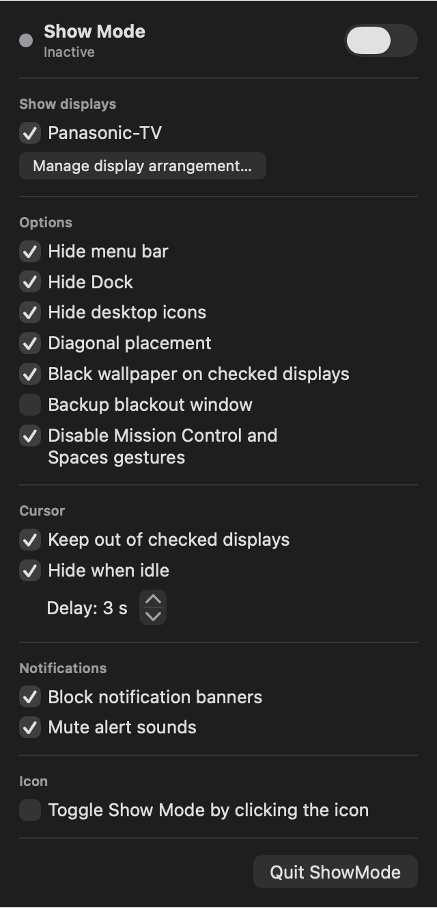
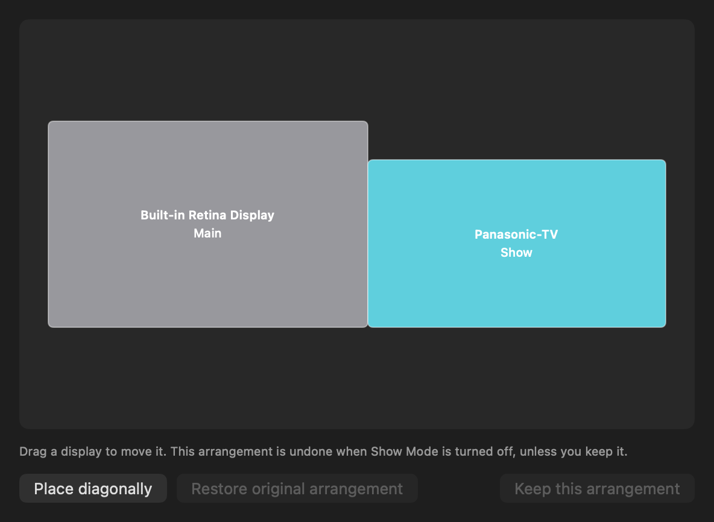

1
Pick your displays
Check each external display that is part of the show. The others stay yours to use.
One switch keeps the cursor, notifications, Dock and desktop icons off your projection displays. Then it puts your Mac back exactly as it was.
ShowMode lives in the menu bar and works alongside QLab or any other playback software.
Check each external display that is part of the show. The others stay yours to use.
Turn on Show Mode from the menu, or with a single click on the icon if you enable it.
Turn it off and every setting ShowMode changed returns to how you had it.
Each protection has its own checkbox, and you can change them while the show is running.


Drag displays into place, or send them diagonally so they only touch at a corner and the cursor can't drift across by accident.
Hides the menu bar, the Dock and the desktop icons.
Puts a pure black wallpaper on your show displays.
An optional full-screen black window on every show display.
Sends the cursor back if it enters a show display, and hides it after 1 to 60 seconds.
Holds back notification banners, mutes alert sounds and turns off Mission Control gestures.
Original settings are saved before each change and restored on exit, or at next launch after a crash.
macOS has no official API for much of this, so some features have limits. Try your full setup first.
Install it, then look for the icon at the top right of your screen.
macOS 13 or later · Apple Silicon & Intel · English & French
Download installer (.pkg)or the .zip to install by hand
ShowMode isn't notarized by Apple yet. Open System Settings → Privacy & Security, scroll down and click Open Anyway.
If the app itself is blocked, paste this in the Terminal:
xattr -dr com.apple.quarantine /Applications/ShowMode.app
Version 0.1.0 · All releases & notes